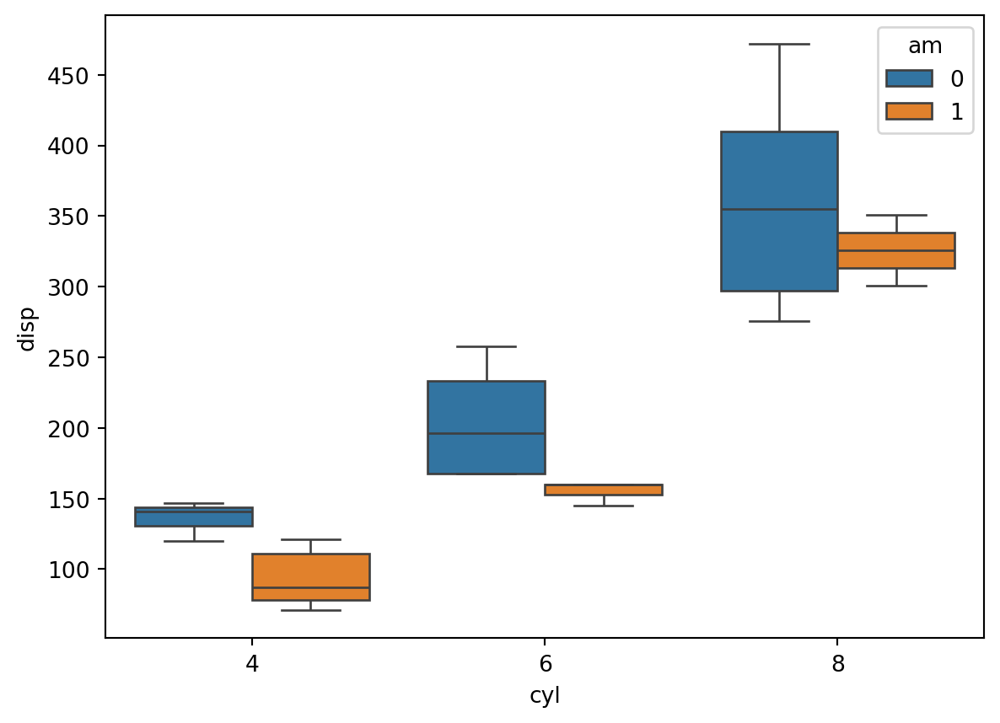

import os
import pandas as pd
import numpy as npBasic Python Review
#df = pd.read_csv(‘../sample_data/DatasaurusDozen.csv’)
前言
敘述統計量
iris_df = pd.read_csv('../sample_data/iris.csv')
print(iris_df.columns)Index(['Sepal.Length', 'Sepal.Width', 'Petal.Length', 'Petal.Width',
'Species'],
dtype='object')# 連續型數值敘述統計量
iris_decs = iris_df[['Sepal.Length', 'Sepal.Width', 'Petal.Length', 'Petal.Width']].describe()
print(iris_decs) Sepal.Length Sepal.Width Petal.Length Petal.Width
count 150.000000 150.000000 150.000000 150.000000
mean 5.843333 3.057333 3.758000 1.199333
std 0.828066 0.435866 1.765298 0.762238
min 4.300000 2.000000 1.000000 0.100000
25% 5.100000 2.800000 1.600000 0.300000
50% 5.800000 3.000000 4.350000 1.300000
75% 6.400000 3.300000 5.100000 1.800000
max 7.900000 4.400000 6.900000 2.500000# 離散型數值敘述統計量
print(iris_df['Species'].value_counts()) # 計數
print(iris_df['Species'].value_counts()*100/len(iris_df)) # 百分比Species
setosa 50
versicolor 50
virginica 50
Name: count, dtype: int64
Species
setosa 33.333333
versicolor 33.333333
virginica 33.333333
Name: count, dtype: float64# 連續型數值 "分組" 敘述統計量
iris_decs_grouped = iris_df.groupby('Species').describe()
print(iris_decs_grouped) Sepal.Length \
count mean std min 25% 50% 75% max
Species
setosa 50.0 5.006 0.352490 4.3 4.800 5.0 5.2 5.8
versicolor 50.0 5.936 0.516171 4.9 5.600 5.9 6.3 7.0
virginica 50.0 6.588 0.635880 4.9 6.225 6.5 6.9 7.9
Sepal.Width ... Petal.Length Petal.Width \
count mean ... 75% max count mean
Species ...
setosa 50.0 3.428 ... 1.575 1.9 50.0 0.246
versicolor 50.0 2.770 ... 4.600 5.1 50.0 1.326
virginica 50.0 2.974 ... 5.875 6.9 50.0 2.026
std min 25% 50% 75% max
Species
setosa 0.105386 0.1 0.2 0.2 0.3 0.6
versicolor 0.197753 1.0 1.2 1.3 1.5 1.8
virginica 0.274650 1.4 1.8 2.0 2.3 2.5
[3 rows x 32 columns]註一：執行分析專案時，常常需要儲存或暫存各式各樣的分析結果，包含資料敘述統計、各種視覺化圖表(寫報告用)、前處理過的資料、建好的模型(備份或供未來使用)，建議有個習慣，在專案程式碼開頭處，便指定好輸出路徑並給予一個變數名稱，例如底下範例 outputPath = 'eda_output'。
註二：另外，當程式碼搬移至別處或別台主機執行，常見需要輸出檔案時，找不到輸出路徑的困擾，建議若需輸出檔案，除了給予指定的路徑外，利用 if not os.path.exists(outputPath): 確認路徑是否存在，若不存在，則自動執行 os.makedirs(outputPath)，為指定的輸出路徑新建資料夾。
# 當統計資訊過大，無法呈現於單一視窗時，可將分析結果儲存起來
outputPath = 'eda_output' # 請見以上註一
if not os.path.exists(outputPath): # 請見以上註二
os.makedirs(outputPath)
# 儲存 "分組" 敘述統計量結果
iris_decs_grouped.to_csv(os.path.join(outputPath, 'iris_decs_grouped.csv')) Seaborn 資料視覺化
Seaborn
import seaborn as sns直方圖 Histogram
sns.histplot(data=iris_df, x='Sepal.Length')
直方圖中最重要參數為 bins ，此參數決定直方圖的柱子數量與寬度，對呈現資料分布的精細度或粗糙度有直接影響，使用上須選擇合適的 bins 值設定，才能正確透過視覺化觀察資料。常見用法如下：
- 整數: 指定柱子數量。例如
bins=10會將數據分成 10 組。 - 串列: 提供一個資料分組的邊界串列，明確指定每個柱子代表的資料範圍。例如
bins=[0, 5, 10, 15]會將數據分別放入 \([0, 5)\)、\([5, 10)\) 和 \([10, 15)\) 範圍內的柱子中。 - 自動計算: 此為
bins的預設值，bins='auto'讓程式根據資料自動計算柱子數量。
以下範例對 Iris 資料的 'Sepal.Length' 分布，在分別設定不同的 bins 值之下，所呈現的圖形。
sns.histplot(data=iris_df, x='Sepal.Length', bins = 20, hue='Species')sns.histplot(data=iris_df, x='Sepal.Length', bins = 20, hue='Species', kde=True)
盒鬚圖 Boxplot
sns.boxplot(data=iris_df, y='Sepal.Length')
sns.boxplot(data=iris_df, x='Species', y='Sepal.Length')
mtcars_df = pd.read_csv('../sample_data/mtcars.csv')sns.boxplot(data=mtcars_df, x='cyl', y='disp', hue='am')
sns.violinplot(data=mtcars_df, x='cyl', y='disp', hue='am')
長條圖 Barplot
sns.countplot(data=mtcars_df, x='cyl')
sns.countplot(data=mtcars_df, x='cyl', hue='am')趨勢圖 Line plot
longley_df = pd.read_csv('../sample_data/longley.csv')
print(longley_df.columns)Index(['GNP.deflator', 'GNP', 'Unemployed', 'Armed.Forces', 'Population',
'Year', 'Employed'],
dtype='object')sns.lineplot(data=longley_df, x='Year', y='GNP.deflator')
散布圖 Scatter Plots
sns.scatterplot(data=iris_df, x='Sepal.Length', y='Sepal.Width')
sns.scatterplot(data=iris_df, x='Sepal.Length', y='Sepal.Width', hue='Species')
等高線圖 Contour Plots
sns.kdeplot(data=iris_df, x='Sepal.Length', y='Sepal.Width', hue='Species')
多欄圖型拼接
sns.pairplot(data=iris_df, hue='Species')g = sns.PairGrid(data=iris_df, diag_sharey=False, hue='Species')
g.map_upper(sns.scatterplot)
g.map_lower(sns.kdeplot)
g.map_diag(sns.kdeplot)
熱圖 Heatmap
volcano_df = pd.read_csv('../sample_data/volcano.csv')
print(volcano_df.columns)Index(['V1', 'V2', 'V3', 'V4', 'V5', 'V6', 'V7', 'V8', 'V9', 'V10', 'V11',
'V12', 'V13', 'V14', 'V15', 'V16', 'V17', 'V18', 'V19', 'V20', 'V21',
'V22', 'V23', 'V24', 'V25', 'V26', 'V27', 'V28', 'V29', 'V30', 'V31',
'V32', 'V33', 'V34', 'V35', 'V36', 'V37', 'V38', 'V39', 'V40', 'V41',
'V42', 'V43', 'V44', 'V45', 'V46', 'V47', 'V48', 'V49', 'V50', 'V51',
'V52', 'V53', 'V54', 'V55', 'V56', 'V57', 'V58', 'V59', 'V60', 'V61'],
dtype='object')print(volcano_df.head(10)) V1 V2 V3 V4 V5 V6 V7 V8 V9 V10 ... V52 V53 V54 V55 \
0 100 100 101 101 101 101 101 100 100 100 ... 107 107 107 106
1 101 101 102 102 102 102 102 101 101 101 ... 108 108 107 107
2 102 102 103 103 103 103 103 102 102 102 ... 109 108 108 107
3 103 103 104 104 104 104 104 103 103 103 ... 109 109 108 108
4 104 104 105 105 105 105 105 104 104 103 ... 110 109 109 108
5 105 105 105 106 106 106 106 105 105 104 ... 110 110 109 108
6 105 106 106 107 107 107 107 106 106 105 ... 110 111 110 109
7 106 107 107 108 108 108 108 107 107 106 ... 113 112 110 110
8 107 108 108 109 109 109 109 108 108 107 ... 115 114 112 110
9 108 109 109 110 110 110 110 109 109 108 ... 117 115 113 111
V56 V57 V58 V59 V60 V61
0 106 105 105 104 104 103
1 106 106 105 105 104 104
2 107 106 106 105 105 104
3 107 107 106 106 105 105
4 107 107 107 106 106 105
5 108 108 107 107 106 106
6 109 108 108 107 107 106
7 109 109 108 108 107 106
8 110 109 109 108 107 107
9 110 110 109 108 107 107
[10 rows x 61 columns]volcano_array = volcano_df.values # pandas.Dataframe -> numpy.array
print(volcano_array.shape)(87, 61)sns.heatmap(data=volcano_array)
https://matplotlib.org/stable/gallery/color/colormap_reference.html
Text(0.5, 1.0, "cmap='Spectral'")
iris_var_columns = iris_df.columns[:4]
iris_corr_mat = iris_df[iris_var_columns].corr()
print(iris_corr_mat) Sepal.Length Sepal.Width Petal.Length Petal.Width
Sepal.Length 1.000000 -0.117570 0.871754 0.817941
Sepal.Width -0.117570 1.000000 -0.428440 -0.366126
Petal.Length 0.871754 -0.428440 1.000000 0.962865
Petal.Width 0.817941 -0.366126 0.962865 1.000000sns.heatmap(data=iris_corr_mat, cmap='seismic', center=0, vmin=-1, vmax=1)Bin plot
big_df = pd.read_csv('../sample_data/big_demo.csv')
print(big_df.columns)Index(['X1', 'X2', 'X3', 'Status'], dtype='object')sns.histplot(data=big_df, x='X1', y='X2')fig = plt.figure(figsize = (12, 3))
ax = plt.subplot(1, 3, 1)
sns.scatterplot(data=big_df, x='X1', y='X2')
ax.set_title("Scatter Plot")
ax = plt.subplot(1, 3, 2)
sns.kdeplot(data=big_df, x='X1', y='X2')
ax.set_title("Contour Plot")
ax = plt.subplot(1, 3, 3)
sns.histplot(data=big_df, x='X1', y='X2')
ax.set_title("Bin Plot")Text(0.5, 1.0, 'Bin Plot')sns.jointplot(data=big_df, x='X1', y='X2', kind="hist")sns.jointplot(data=big_df, x='X1', y='X2', kind="hex")